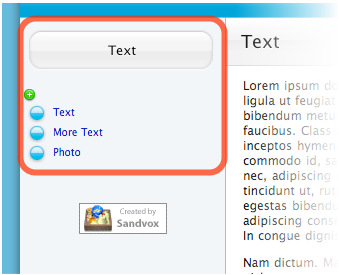

Index pagelet
A Collection Index pagelet lists the pages in a collection. Visitors can click on a page in the list to view it.

A Collection Index pagelet.
To create a Collection Index pagelet:
- Click the "Pagelets" item in the toolbar and select "Collection Index."
- Open the Selection Inspector.
-
Drag the target icon to a collection in the Site Outline. You can disconnect from the collection by clicking the cross icon.
Settings
You can limit how many items should appear in the list. In the "Maximum entries" box enter the number you require. Leave the box blank to impose no limit.